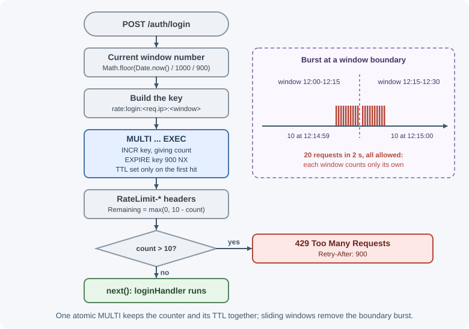
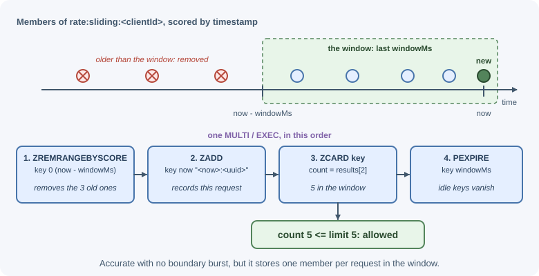
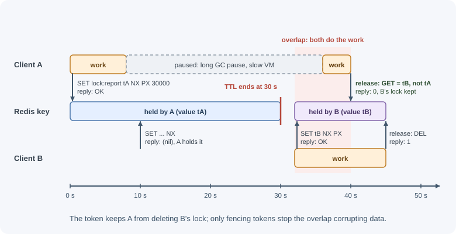

Common Redis Use Cases¶
Beyond caching, Redis is the shared, fast memory that many backend features depend on: sessions, rate limits, leaderboards, counters, locks, job queues, unique-visitor counts, and location search. Each pattern below combines a data structure with a few atomic commands. The lesson shows how each works, gives Node.js code, and points out where the pattern has limits.
Why it matters¶
These features all share three needs: several application instances must see the same state, updates must be safe when many requests arrive at once, and the operations must be fast. Implementing them in the primary database often adds load, contention, and complexity. Redis's atomic commands make them short and correct, as long as you understand each pattern's guarantees, especially for locks, where Redis is often trusted more than it should be.
Real-world usage¶
- Stripe rate-limits its API with the token bucket algorithm, with one bucket per user, and implements its rate limiters with Redis. A separate load shedder uses a Redis cluster to count in-flight requests by type so critical requests (such as creating charges) keep capacity. Stripe also stresses failing open: if Redis goes down, requests must still be served (Stripe: Scaling your API with rate limiters).
- GitLab keeps sessions, rate-limiting state, and its Sidekiq job queue in Redis, and runs separate Redis instances for these jobs on GitLab.com (GitLab: Redis guidelines).
- Slack built its original job queue on Redis: enqueue requests were routed to a Redis host by a hash of the job, workers polled Redis and moved jobs to an in-flight list, and failed jobs went to a retry queue (Slack engineering).
Popular tools: BullMQ for Node.js job queues, Sidekiq (used by GitLab and Mastodon) for Ruby, and session stores such as connect-redis for Express.
How it works¶
Session store¶
When an app runs on several instances, in-memory sessions break: a user who logs in on instance A appears logged out on instance B. Storing sessions in Redis gives every instance the same view, and a TTL on each session key expires idle sessions automatically.
Browser --cookie: sid=abc--> any app instance --GET sess:abc--> Redis
With Express, express-session uses a Redis store such as connect-redis;
the cookie holds only the session ID. Configuration and security options are
covered in cookies and sessions in Express.
Keep sessions on a Redis instance that does not evict them under memory
pressure (noeviction). A volatile-* policy is not enough: session keys
carry TTLs, so they are eviction candidates too.
Rate limiting¶
Rate limiting counts requests per client in a time window. The algorithms (fixed window, sliding window, token bucket) are explained in rate limiting and throttling; Redis is the usual place to keep the counters because all instances share them.
Fixed window with INCR and EXPIRE:

EXPIRE ... NX (Redis 7+) sets the TTL only when the key is new.
Run both commands in one MULTI/EXEC transaction (or a Lua script) so a
crash between them cannot leave a counter without a TTL. Fixed windows allow
bursts at window boundaries: a client can make the full limit at 12:00:59
and again at 12:01:00.
Sliding window log with a sorted set: store one member per request with the timestamp as its score, delete members older than the window, then count what remains.

This is accurate but uses memory per request; a sliding window counter or token bucket (often written as a Lua script) is cheaper at high volume.
Leaderboards¶
A sorted set is a leaderboard: members are player IDs, scores are points.
| Need | Command |
|---|---|
| Add points | ZINCRBY board 50 player:7 |
| Top 10 | ZRANGE board 0 9 REV WITHSCORES |
| A player's rank (1-based) | ZREVRANK board player:7 + 1 |
| A player's score | ZSCORE board player:7 |
| Players around me | ZRANGE board (rank-2) (rank+2) REV |
All of these are O(log N), so they stay fast with millions of players. Use
separate keys for periods (board:2026-w45) with a TTL, and decide how to
break ties: members with equal scores are ordered by their member string.
Counters¶
INCR, INCRBY, and HINCRBY are atomic, so counters stay exact under
concurrency: page views, API usage per customer, "likes", or inventory
reservations. Group related counters in a hash per day
(stats:2026-11-07 with fields per page) and periodically copy totals to the
primary database for long-term reporting.
Distributed locks¶
Sometimes only one process across all instances may do something at a time: send a daily report, refresh a cache entry, or process one user's payment. A Redis lock is a key that only one client can create.
Acquire:
SET lock:report:2026-11-07 <random-token> NX PX 30000
NXcreates the key only if it does not exist, so only one client wins.PX 30000makes the lock expire after 30 seconds, so a crashed holder cannot block everyone forever.- The random token identifies the owner.
Release safely: a holder must delete the lock only if it still owns it. Otherwise this can happen: client A's work takes longer than 30 seconds, the lock expires, client B acquires it, and then A finishes and deletes B's lock. Comparing the token and deleting must be atomic, so it is done in a Lua script:
if redis.call("GET", KEYS[1]) == ARGV[1] then
return redis.call("DEL", KEYS[1])
else
return 0
end
The limits of Redis locks. An expiring lock cannot guarantee mutual exclusion on its own. If the holder pauses (a long garbage-collection pause, a slow network, a stopped VM) longer than the TTL, the lock expires and a second client acquires it while the first still believes it holds it. Also, with asynchronous replication, a lock written to a primary can be lost if the primary fails before the replica received it.

- Redlock is an algorithm that acquires the lock on a majority of several independent Redis primaries to survive single-node failures. It has been criticized (notably by Martin Kleppmann) because its safety still depends on timing assumptions about clocks and pauses.
- The robust fix for correctness is a fencing token: a number that increases each time the lock is granted and that the protected resource (for example the database) checks, rejecting writes with an older token.
Rule of thumb: use Redis locks for efficiency (avoiding duplicate work, where an occasional overlap is harmless). When overlap would corrupt data, rely on database constraints and transactions, or a coordination system designed for consensus (such as etcd or ZooKeeper), plus fencing. See concurrency and race conditions.
Job queues¶
Slow work (emails, image processing, reports) should leave the request path
and run in background workers; see
background jobs and scheduling.
A raw Redis list with LPUSH/BRPOP works for simple cases but loses jobs
when a worker crashes and has no retries. Libraries such as BullMQ build
a full queue on Redis: retries with backoff, delayed jobs, scheduled
(repeatable) jobs, priorities, concurrency limits, and progress, with
third-party dashboards available. Because a queue must never silently lose
jobs, BullMQ's documentation says its Redis must use the noeviction memory
policy, and it needs appropriate persistence.
Unique visitors with HyperLogLog¶
Counting unique visitors exactly needs memory for every visitor ID. A HyperLogLog estimates the count within about 1% using at most about 12 KB per key:
PFADD uv:2026-11-07 <visitorId> on every page view
PFCOUNT uv:2026-11-07 daily uniques
PFMERGE uv:2026-w45 uv:2026-11-03 ... uv:2026-11-09 weekly uniques
Use it for dashboards and analytics where an estimate is acceptable, not for billing.
Geo search¶
Geospatial indexes answer "what is near this point?": nearby drivers,
stores, or events. Drivers' apps send positions every few seconds
(GEOADD drivers lon lat driver:7), and the dispatcher searches with
GEOSEARCH drivers FROMLONLAT lon lat BYRADIUS 3 km ASC COUNT 10 WITHDIST.
Remove offline drivers with ZREM (a geo index is a sorted set underneath).
Other common patterns¶
| Pattern | How |
|---|---|
| Idempotency keys / deduplication | SET idem:<key> <result> NX EX 86400; a second request with the same key is detected. See timeouts, retries, and idempotency |
| Online presence | SET presence:user:42 1 EX 60 refreshed by a heartbeat; the key expires when the user leaves |
| Feature flags and runtime config | Hash of flags read by every instance |
| Real-time fan-out | Pub/Sub or streams; see Pub/Sub and streams |
| One-time codes and tokens | SET otp:user:42 <code> EX 300, deleted after use |
When to use and when not to use¶
Use these Redis patterns when:
- Many instances need the same short-lived coordination state: sessions, counters, rate limits, presence, one-time codes.
- An occasional duplicate is harmless and the goal is efficiency (a lock that avoids running the same report twice).
- An estimate is good enough (HyperLogLog uniques) or the data can be rebuilt (leaderboards recomputed from the database).
Use something else when:
- Two holders of a lock would corrupt data: rely on database constraints and transactions, or a consensus system such as etcd or ZooKeeper, plus fencing tokens.
- Messages must be retained for days, routed in complex ways, or survive disk-level failures: a broker such as RabbitMQ, Amazon SQS, or Kafka.
- Counts must be exact for billing or audits: the primary database.
| Need | Redis pattern | Alternative | Prefer the alternative when |
|---|---|---|---|
| Mutual exclusion | SET NX PX + token |
Database row lock, unique constraint, etcd/ZooKeeper | Overlap would corrupt data |
| Background jobs | BullMQ on Redis | RabbitMQ, Amazon SQS, Kafka | You need long retention or strong durability |
| Rate limiting | INCR + EXPIRE, sorted set, or a Lua token bucket |
API gateway or proxy limits | Limits are simple and per IP at the edge |
| Sessions | Session hash or string with TTL | Signed cookies or JWTs | You want no server-side session store |
| Unique visitors | HyperLogLog | Exact set or database count | Exact numbers are required |
Practical examples¶
Fixed-window rate limiter middleware¶
import { redis } from "./redis.js"; // shared node-redis client
export function rateLimit({ limit, windowSeconds, keyPrefix }) {
return async (req, res, next) => {
const window = Math.floor(Date.now() / 1000 / windowSeconds);
const key = `rate:${keyPrefix}:${req.ip}:${window}`;
const [count] = await redis
.multi()
.incr(key)
.expire(key, windowSeconds, "NX") // TTL only on the first request
.exec();
res.set("RateLimit-Limit", String(limit));
res.set("RateLimit-Remaining", String(Math.max(0, limit - count)));
if (count > limit) {
res.set("Retry-After", String(windowSeconds));
return res.status(429).json({ error: "Too many requests" });
}
next();
};
}
app.post("/auth/login", rateLimit({ limit: 10, windowSeconds: 900,
keyPrefix: "login" }), loginHandler);
Sliding-window log¶
import { randomUUID } from "node:crypto";
export async function allowRequest(clientId, limit, windowMs) {
const key = `rate:sliding:${clientId}`;
const now = Date.now();
const results = await redis
.multi()
.zRemRangeByScore(key, 0, now - windowMs)
.zAdd(key, { score: now, value: `${now}:${randomUUID()}` })
.zCard(key)
.pExpire(key, windowMs)
.exec();
const count = results[2];
return count <= limit;
}
Leaderboard¶
export async function addPoints(playerId, points) {
await redis.zIncrBy("board:2026-w45", points, `player:${playerId}`);
}
export async function topPlayers(n = 10) {
return redis.zRangeWithScores("board:2026-w45", 0, n - 1, { REV: true });
}
export async function rankOf(playerId) {
const rank = await redis.zRevRank("board:2026-w45", `player:${playerId}`);
return rank === null ? null : rank + 1; // 1-based for display
}
127.0.0.1:6379> ZRANGE board:2026-w45 0 2 REV WITHSCORES
1) "player:7"
2) "980"
3) "player:3"
4) "955"
5) "player:12"
6) "940"
Acquiring and releasing a lock¶
import { randomUUID } from "node:crypto";
const RELEASE_SCRIPT = `
if redis.call("GET", KEYS[1]) == ARGV[1] then
return redis.call("DEL", KEYS[1])
else
return 0
end`;
export async function withLock(resource, ttlMs, work) {
const key = `lock:${resource}`;
const token = randomUUID();
const acquired = await redis.set(key, token, { NX: true, PX: ttlMs });
if (!acquired) return { ran: false }; // someone else holds it
try {
return { ran: true, result: await work() };
} finally {
// Delete only if the lock is still ours.
await redis.eval(RELEASE_SCRIPT, { keys: [key], arguments: [token] });
}
}
// Only one instance sends the daily report.
await withLock("report:2026-11-07", 60_000, () => sendDailyReport());
A BullMQ queue and worker¶
By default BullMQ creates its own Redis connections with the ioredis client, so you pass connection settings rather than a node-redis client (recent versions also ship adapters for other clients, including node-redis).
import { Queue, Worker } from "bullmq";
const connection = {
host: process.env.REDIS_HOST,
port: Number(process.env.REDIS_PORT ?? 6379),
};
export const emailQueue = new Queue("emails", { connection });
// Producer: in the request handler
await emailQueue.add(
"welcome",
{ userId: 42 },
{ attempts: 5, backoff: { type: "exponential", delay: 1000 },
removeOnComplete: 1000 }
);
// Consumer: in a separate worker process
const worker = new Worker(
"emails",
async (job) => {
await sendWelcomeEmail(job.data.userId); // throw to trigger a retry
},
{ connection, concurrency: 10 }
);
worker.on("failed", (job, err) => {
console.error(`job ${job?.id} failed: ${err.message}`);
});
Unique visitors and nearby search¶
await redis.pfAdd(`uv:${today}`, visitorId);
const uniquesToday = await redis.pfCount(`uv:${today}`);
127.0.0.1:6379> GEOADD drivers -122.4194 37.7749 driver:7 -122.4089 37.7837 driver:9
(integer) 2
127.0.0.1:6379> GEOSEARCH drivers FROMLONLAT -122.4148 37.7790 BYRADIUS 2 km ASC COUNT 5 WITHDIST
1) 1) "driver:7"
2) "0.6095"
2) 1) "driver:9"
2) "0.7364"
Best practices¶
- Combine related commands in
MULTIor a Lua script so state is never half-updated. - Give every pattern's keys a TTL or an explicit cleanup path.
- Keep durable patterns (sessions, queues) on Redis that does not evict them; keep caches separate.
- Use random tokens and compare-and-delete for locks; never
DELblindly. - Treat Redis locks as best-effort; protect correctness with database constraints or fencing tokens.
- Prefer proven libraries (BullMQ, rate-limit stores) over hand-written queue logic.
- Partition keys by time period for leaderboards and analytics so old data expires.
In production¶
Clients stay rate-limited forever, or memory creeps up.
- Detect:
SCAN 0 MATCH rate:* COUNT 1000finds counters, andTTLon them returns-1(no expiry). - Cause:
INCRandEXPIREran as separate calls and the process crashed in between, orEXPIREwas forgotten. - Fix: run them together in
MULTI/EXECor a Lua script, and useEXPIRE ... NXso only the first request sets the TTL.
A Redis outage blocks every request.
- Detect: API error rates jump at the same time as Redis connection errors in the logs.
- Cause: rate-limit or session middleware treats a Redis error as a hard failure.
- Fix: decide per feature whether to fail open; Stripe's advice for rate limiters is to catch errors so a Redis failure does not affect requests (Stripe).
The same job runs twice.
- Detect: logs show two workers processing the same lock key or job ID at overlapping times.
- Cause: the work took longer than the lock's TTL (a slow call or a long pause), the lock expired, and a second worker took it.
- Fix: make the work idempotent, size the TTL well above the worst-case duration, and use fencing tokens where overlap corrupts data.
The job backlog keeps growing.
- Detect: BullMQ's
queue.getJobCounts()shows waiting jobs rising;INFO memoryshows Redis memory rising with it. - Cause: producers outpace workers, or workers are down. Slack's Redis job queue had an outage when the backlog filled Redis's memory and workers could no longer dequeue (Slack engineering).
- Fix: alert on queue depth, scale workers, remove completed jobs
(
removeOnComplete), and keep queue Redis onnoevictionwith memory headroom.
Everyone is logged out after Redis restarts.
- Detect: session cookies remain but
GET sess:<id>returns nothing;INFO persistenceshows persistence is off, orevicted_keysis rising. - Cause: sessions were kept on an instance without persistence, or one that evicts keys.
- Fix: store sessions on their own instance with AOF persistence and
noeviction(avolatile-*policy would not protect them, because sessions carry TTLs), or accept re-login as a deliberate trade-off.
Important terminology¶
- Session store: Shared storage for server-side session data.
- Fixed window / sliding window: Rate-limit windows aligned to the clock or moving with each request.
- Distributed lock: A lock coordinated across processes or machines.
- Lock token: A random value that identifies the lock owner.
- Fencing token: An increasing number checked by the protected resource to reject stale lock holders.
- Redlock: An algorithm for locks across several independent Redis primaries.
- Idempotency key: A client-supplied key that makes a repeated request safe.
Common mistakes and misconceptions¶
INCRthenEXPIREas separate, unprotected calls. A crash in between leaves a counter that never expires.- Releasing a lock with plain
DEL. It can delete another client's lock. - "A Redis lock guarantees only one holder." Pauses, expiry, and failover can produce two holders.
- Using a plain list as a reliable queue. Jobs vanish when a worker crashes after popping.
- Running a job queue on Redis with an eviction policy. Jobs can be evicted silently.
- Using HyperLogLog for exact counts. It is an estimate.
- Storing sessions in a cache instance with
allkeys-lru. Users get logged out under memory pressure.
Revision questions¶
- Why must
INCRandEXPIREin a rate limiter be executed together? - How does a sorted set implement a sliding-window rate limiter, and what does it cost?
- Why does a lock release need a token and an atomic compare-and-delete?
- Describe a scenario where two clients both believe they hold a Redis lock, and how fencing tokens help.
- What does BullMQ add on top of a Redis list?
- When is HyperLogLog appropriate, and when is it not?